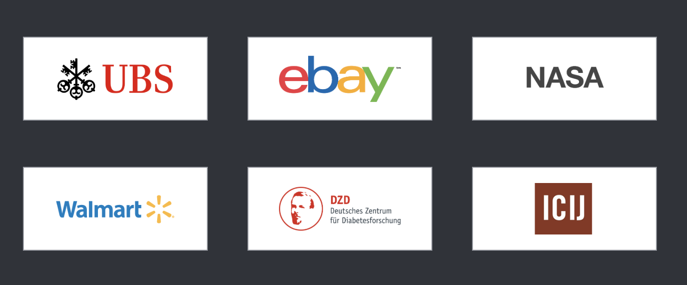
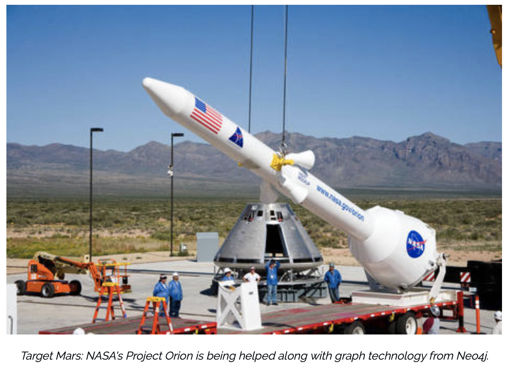

Neo4j in the industry today
Each node in the Neo4j graph database contains a relationship list directly which stores the relationship records between this node and other nodes.These relationship records are organized by type and direction and additional properties can be saved. The Neo4j graph database will use this list to directly access the connected nodes without any record search and matching calculation operations. The ability to store relationships in a relational list in advance enables Neo4j to provide several orders of magnitude higher performance than a relational database. Neo4j can achieve millisecond response for queries with complex connections. Therefore, many companies use Neo4j as a tool to help their development: UBS, eBay, NASA, Walmart, Adobe, etc..

Example1: eBay
When eBay need to build the App for Google Assistant, the knowledge graph they needed would be coupled with natural language understanding and artificial intelligence to store, remember and learn from past interactions with shoppers. The main reason why eBay chose Neo4j as local graphic database is that the data model obtained by using graphic database to organize data is simpler and more expressive than that of traditional relational or other NoSQL databases.The graph database holds the probabilistic model which is helpful to understand the conversational shopping scenario, as well as the properties which include the product catalog and the consumer interaction when searching the product.
Search more eBay cases
Example2: NASA

Neo4j graph database supports flexible and fine-grained data models. Data application can be modeled and managed in a simple and intuitive way. Neo4j can make the data unit smaller and more standardized and realize variety of relationship connections at the same time. NASA use neo4j to explore the "lessons learned" database more effectively and then search for effective information to link with follow-up actions and projects. The scalability of neo4j and the ability to view millions of nodes meet the needs of NASA. Neo4j is an application that can quickly connect these information across millions or even billions of nodes. Users can easily visualize data, view connections, understand how data is affected and find information faster.
Search more NASA cases
Previous
Next